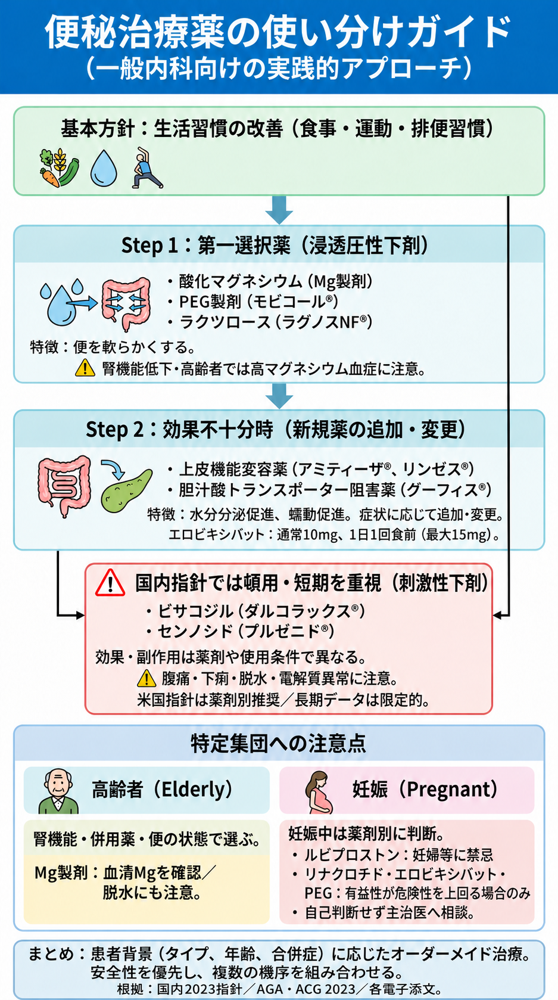

成人の便秘治療薬：図解
画像の小さな文字は原寸PNGを開いて拡大してください。
文字による補足
国内では浸透圧性下剤を基本に選択し、刺激性下剤は頓用・短期を重視。米国指針は薬剤別推奨で長期データに留保があります。エロビキシバットは通常10mgを1日1回食前、最大15mg。ルビプロストンは妊婦等に禁忌。リナクロチド・エロビキシバット・PEGは妊娠中の有益性が危険性を上回る場合のみ使用します。Mg製剤は高マグネシウム血症に注意します。
図1
国内指針と米国指針の違い、薬剤別の妊娠時の扱い、エロビキシバットの服用回数を反映した訂正版です。

根拠と説明
各主張の対象・限界・原典は記事の参考文献と本文を参照してください。図だけで薬剤の開始・変更を判断せず主治医へ相談してください。